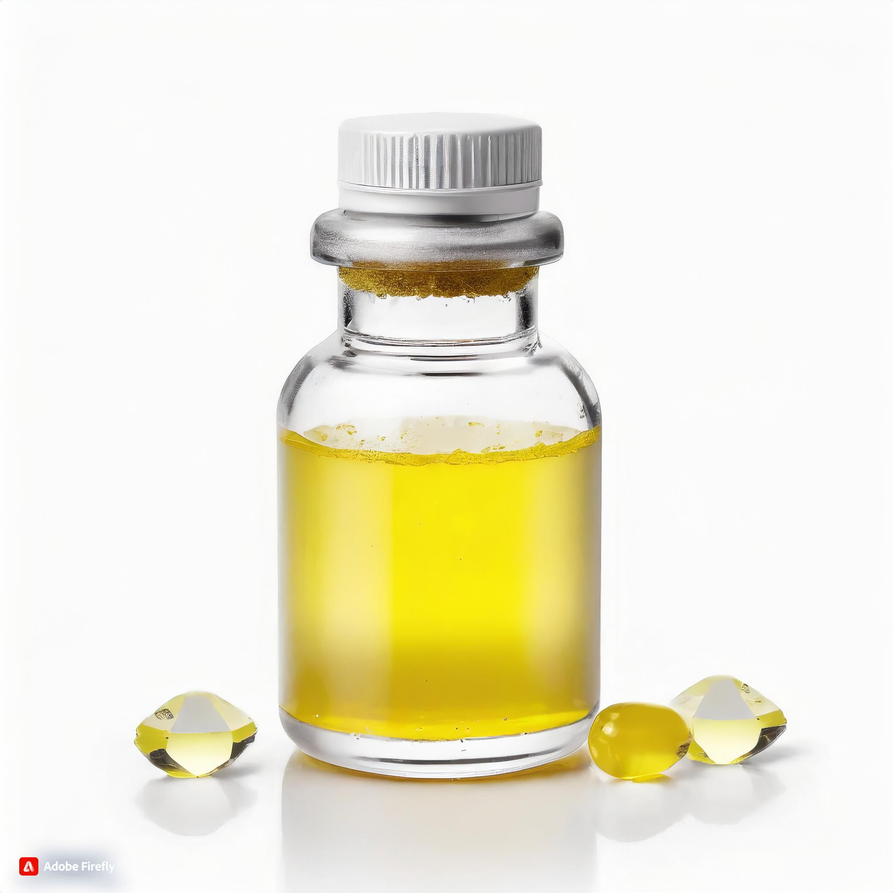

Wischmediday ist ein Powerdrink, der natürliche Inhaltsstoffe wie Guarana, Ginseng und Vitamin B12 enthält, um Müdigkeit zu bekämpfen und die Konzentration zu steigern. Er bietet sofortige Wachheit ohne die negativen Nebenwirkungen von Koffein. Ideal für alle, die einen Energieschub benötigen, ob vor Meetings, beim Autofahren oder einfach nur für den täglichen Gebrauch. Bestelle jetzt für einen energiegeladenen Lebensstil!
